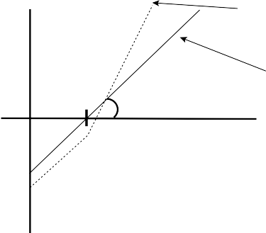

12.6 STOCKS, CASH, AND OPTIONS
A manager who has built a portfolio may wish to leverage the port- folio yet another way. Rather than using index futures to increase the market exposure of the entire portfolio, the manager may wish to leverage the portfolio with index options. The reason to do this is twofold. First of all, options have the potential for a nonlinear payoff. They can leverage returns on the upside without leveraging them on the downside. The second reason is that options offer a greater magnitude of leverage than do index futures. This kind of flexibility comes at a cost, though, because options are pricey.
Figure 12.3 shows how the payoff is altered with a call option on an underlying portfolio. The payoff of the overall portfolio is leveraged two times for upward movements in the index but continues to be unlevered for downward movements.
The number of call option contracts required on a given index to achieve a given level of * for the entire portfolio given a current
s for the stock portion of the portfolio will be given by
F I G U R E 1 2 . 3

Portfolio payoffs with and without leverage using call options.

V(t)
Payoff with 2x leverage
Payoff without leverage
45
S(t)

CHAPTER 12: Leverage 375
1s Vt
NO
OqOSt
(12.39)
1s Vt

O IqOSt
where NO represents the number of call option contracts to pur- chase, qO represents the option contract multiplier, * equals the desired level of exposure, s is the of the stock portfolio, O is the delta of the call option, I is the of the underlying index with respect to the benchmark, and O = O I is just the delta approxi- mation for the of the option contract.31
For example, suppose that we use the same numbers as in the
preceding example. Thus the S&P 500 is trading at 1000, the port- folio manager would like to hold 50% cash, and the desired * = 2. Normally, a portfolio manager simply will look up the prices of traded call options and either use a standard Black-Scholes or compute his or her own. Suppose that the price of an at-the-money call option (i.e., K = 1000) was c = 43.58. Suppose that the of this call equaled 0.55.32 Using our formula, we find that we should have
N 2 0.5 1 1100M 1819.05
O 0.55 1 100 1000
(12.40)
Thus the portfolio manager should purchase 1819 calls on the S&P
500. This will provide the desired leverage of 2.
Leveraging through options offers the major advantage of mag- nifying only the upside. The chief danger of leverage, as explained at the outset of this chapter, is that it creates the possibility of a very hard fall when the portfolio runs into negative returns. With options leverage, though, the portfolio loses only what it would lose anyway. Perhaps this sounds too good to be true. Indeed, the cost of this kind of insurance is steep. The options in this example have a 3-month duration. They would cost a total of 100· 1819· 43.58 = $7,927,202. Leverage with downside protection costs $8 million dollars for a

31 Index option contracts are 100 times the actual index. Thus qO = 100. All the major index options are European-style options, except the S&P 100, which is an American-style option. For more details, please consult the Chicago Board Options Exchange (www.cboe.com) and/or a derivatives textbook.
32 In reality, it will be very unlikely to find a call option that is perfectly at the money (i.e., strike price equal to index value); thus a portfolio manager will have to find the option with the closest moneyness.